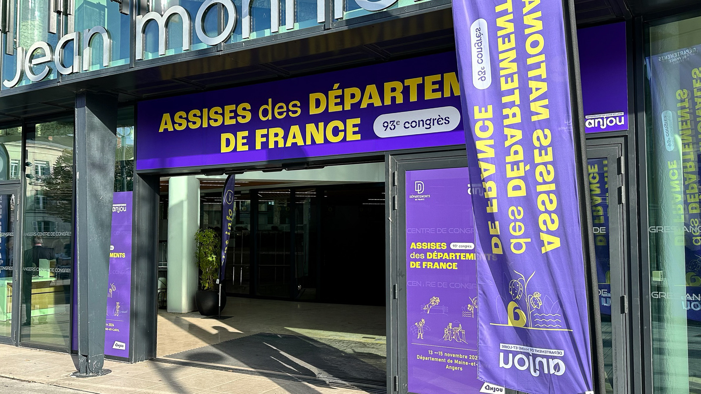
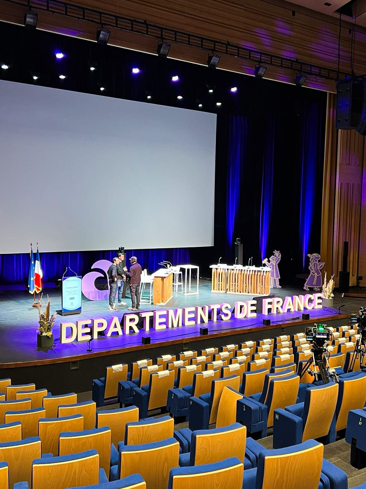
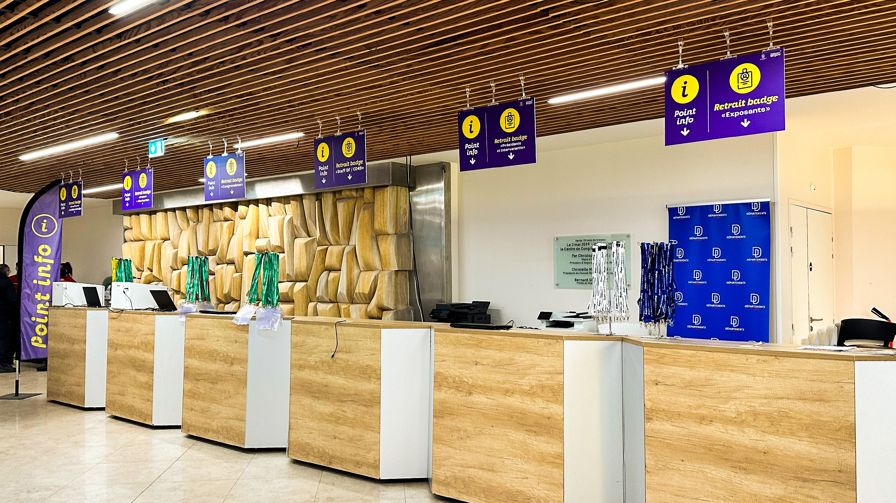
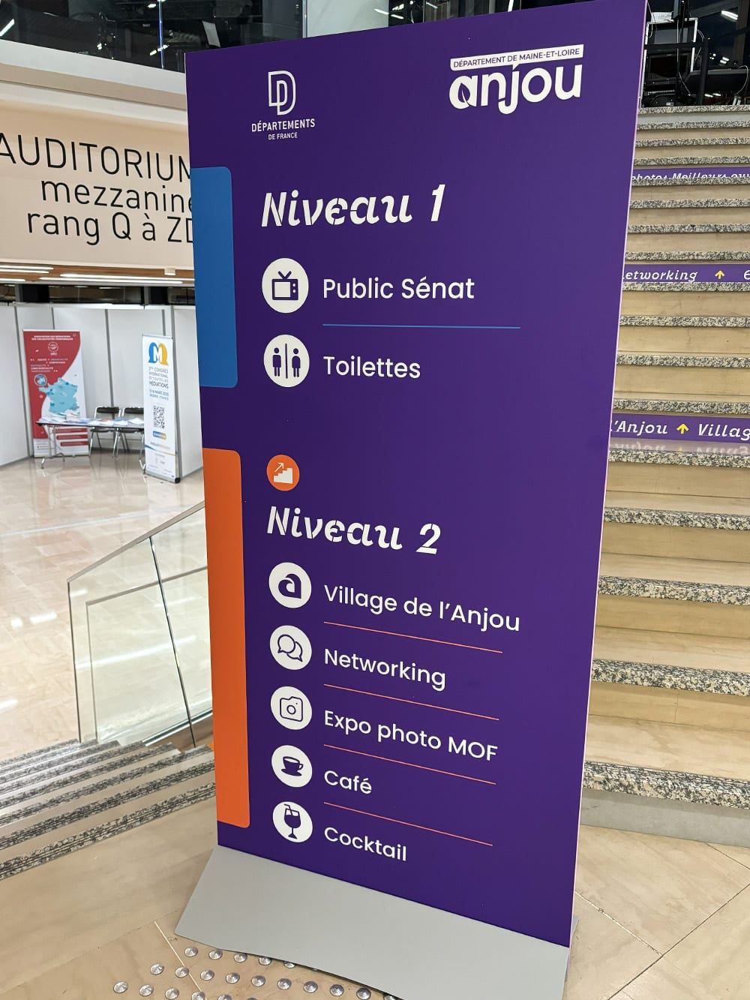
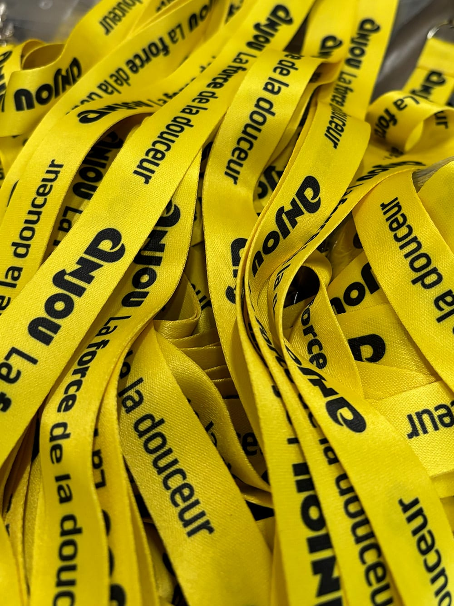
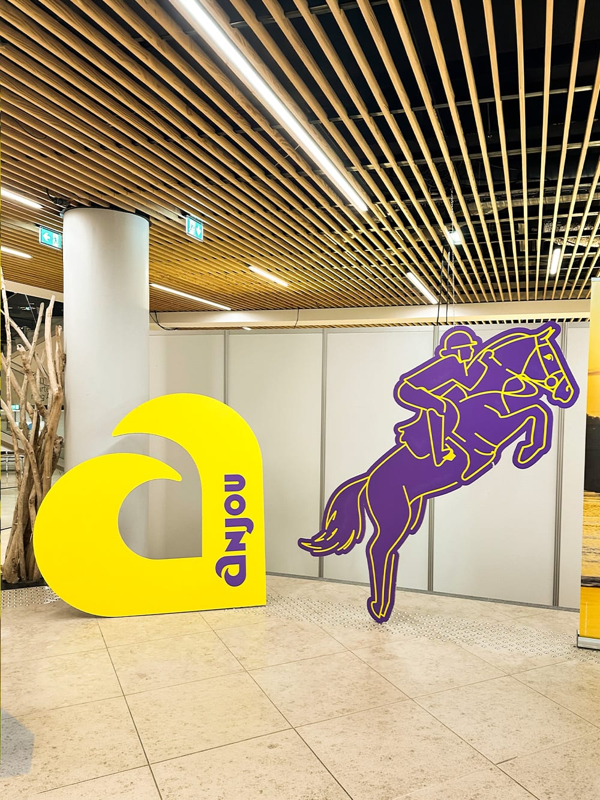
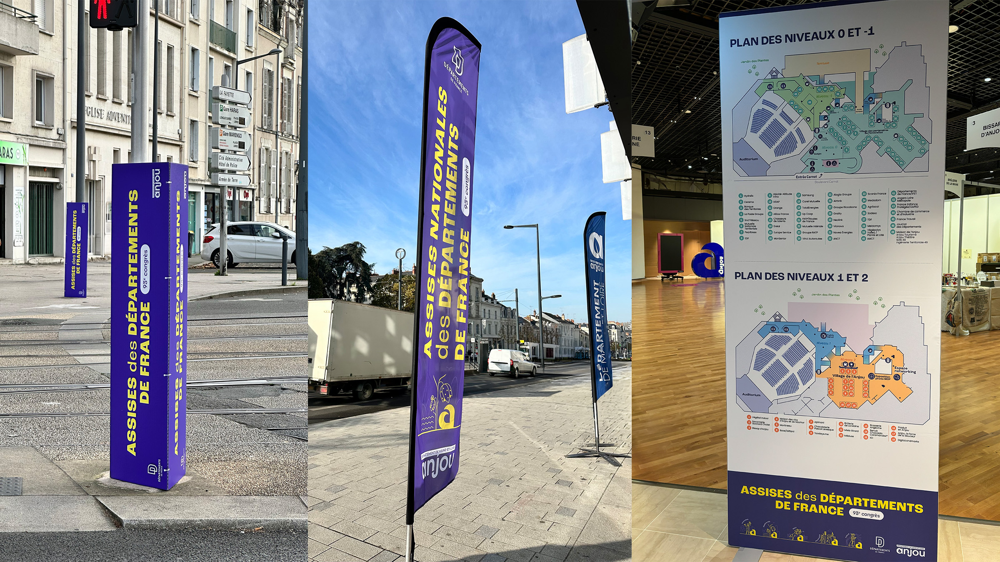

93e Assises des Départements de France — Signalétique
En novembre 2024, le Département de Maine-et-Loire accueillait à Angers le 93e congrès des Assises des Départements de France, un temps fort national réunissant plus de 1 200 participants sur trois jours au Centre de Congrès. Dès mon arrivée au Département, j'ai été intégré à l'organisation de cet événement d'envergure.


En novembre 2024, le Département de Maine-et-Loire accueillait à Angers le 93e congrès des Assises des Départements de France, un temps fort national réunissant plus de 1 200 participants sur trois jours au Centre de Congrès. Dès mon arrivée au Département, j'ai été intégré à l'organisation de cet événement d'envergure.
- Année
- 2024


Approche
Ma mission portait sur la signalétique du congrès. J'ai conçu deux familles de supports complémentaires : des panneaux d'information détaillant le déroulé de chaque journée, pour permettre aux participants de se repérer dans le programme, et un système de jalonnement directionnel plus synthétique, pensé pour guider les flux dans les espaces du Centre de Congrès. J'ai également été mobilisé sur place durant les trois jours de l'événement.


"À compléter."
